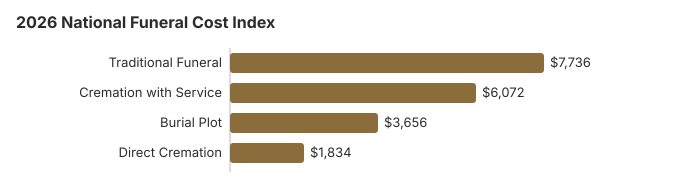

Average Funeral Cost in the U.S. (2026 Index)
Original research: comprehensive funeral pricing data for all 50 states and 50 major metropolitan areas, with regional analysis, cremation trends, and inflation tracking.
How we calculate these costs
The national figures in this index are simple (unweighted) averages of our 50 state-level estimates, so they differ from the NFDA’s national median ($8,300 for a funeral with viewing and burial in the NFDA 2023 General Price List Study, the most recent edition). The state estimates themselves are editorial figures anchored to NFDA benchmarks and adjusted for regional cost differences; they are not a statistical survey of funeral homes. Cremation context comes from CANA and NFDA reports, and price-trend context from the BLS Consumer Price Index for funeral expenses (CUUR0000SEGD02). Always confirm prices with a provider’s General Price List, which the FTC Funeral Rule (16 CFR Part 453) requires them to give you.
Average Funeral Cost in the U.S.: The Short Answer
The most recent national median from the National Funeral Directors Association is $8,300 for a funeral with viewing and burial ($9,995 once a vault is added) and $6,280 for a funeral with viewing and cremation, from its 2023 General Price List Study released December 8, 2023. The simple average of this index’s 2026 state estimates is a little lower, at $7,736 for a traditional funeral.
NFDA also publishes its medians by census region. They give an outside check on the regional figures further down, which are our own estimates:
| Census region (NFDA 2023) | Viewing + burial median | Viewing + cremation median |
|---|---|---|
| New England (CT, ME, MA, NH, RI, VT) | $8,985 | $7,023 |
| Middle Atlantic (NJ, NY, PA) | $8,573 | $6,498 |
| South Atlantic (DE, FL, GA, MD, NC, SC, WV, VA) | $8,023 | $6,103 |
| East South Central (AL, KY, MS, TN) | $7,615 | $5,858 |
| West South Central (AR, LA, OK, TX) | $7,912 | $5,890 |
| East North Central (IL, IN, MI, OH, WI) | $8,280 | $6,120 |
| West North Central (IA, MN, KS, MO, ND, SD, NE) | $8,755 | $6,713 |
| Mountain (AZ, CO, ID, MT, NV, NM, UT, WY) | $7,390 | $5,505 |
| Pacific (AK, CA, HI, OR, WA) | $7,835 | $5,812 |
| United States | $8,300 | $6,280 |
Source: NFDA, 2023 General Price List Study news release (released December 8, 2023; checked October 29, 2026). These are national medians of funeral home charges. They leave out the cemetery plot, opening and closing, the marker and cash-advance items.
What this page is for. This is the citation copy: state and metro figures, regions, and the inflation context, written so it can be linked. If you want the plain-language answer first, start with average funeral cost in 2026. If you want a personal total, use the calculator.
Key Findings
- Hawaii is the most expensive state for a traditional funeral at $11,000, followed by New York ($10,800) and California ($10,600). The Northeast and West regions are consistently the highest-cost areas (state estimates on this site; see methodology).
- Mississippi is the most affordable state at $5,900 for a traditional funeral, with the South region averaging $6,736—13% below the national average.
- Cremation is now the majority choice nationally: NFDA’s 2025 Cremation & Burial Report projected a 63.4% United States cremation rate for 2025. Among the state estimates used on this site, Western states average 71.6% while Southern states average 44.0%.
- State gaps are wide in our estimates: California ($14,310) comes out 85% above our 50-state average, and Oklahoma ($6,405) 17% below it.
- In our estimates, direct cremation costs 76.3% less than a traditional funeral—an average difference of $5,902 across our 50 state estimates.
- Funeral prices have risen about 3.6% a year since 2021 according to the BLS Consumer Price Index for funeral expenses (CUUR0000SEGD02), compared with about 4.1% a year for all items.
2026 National Average Funeral Costs
These averages are calculated across all 50 states using data from the NFDA 2023 General Price List Study, the Funeral Consumers Alliance, the CANA (Cremation Association of North America) 2024 Annual Report, state funeral board filings made under the FTC Funeral Rule (16 CFR Part 453), CDC NCHS mortality data, and federal consumer expenditure data from the BLS Consumer Price Index: Funeral Services (CUUR0000SEGD02). Eligible families should also factor in the SSA lump-sum death payment (42 U.S.C. § 402(i)) and, for veterans, the VA burial allowance (38 CFR § 3.1600).
| Service Type | Average of State Estimates | vs. Traditional | Description |
|---|---|---|---|
| Traditional Funeral | $7,736 | — | Full-service funeral with viewing, ceremony, hearse, and burial |
| Cremation with Service | $6,072 | −21.5% | Memorial service followed by cremation |
| Burial Plot | $3,656 | −52.7% | Average cemetery plot cost (additional to funeral) |
| Direct Cremation | $1,834 | −76.3% | Cremation only, no viewing or ceremony |

50-State Funeral Cost Rankings
States ranked from most to least expensive for a traditional funeral with viewing and burial. Click any state name to see its detailed cost guide with city-level data, local regulations, and payment assistance programs.
| Rank | State | Traditional Funeral | Cremation w/ Service | Direct Cremation | Burial Plot | Cremation Rate |
|---|---|---|---|---|---|---|
| 1 | Hawaii | $11,000 | $8,200 | $3,000 | $5,500 | 70% |
| 2 | New York | $10,800 | $8,000 | $2,600 | $5,400 | 55% |
| 3 | California | $10,600 | $7,800 | $2,200 | $5,200 | 65% |
| 4 | Massachusetts | $10,400 | $7,800 | $2,500 | $5,200 | 58% |
| 5 | Connecticut | $10,200 | $7,600 | $2,400 | $5,000 | 52% |
| 5 | New Jersey | $10,200 | $7,600 | $2,400 | $5,000 | 48% |
| 7 | Alaska | $9,800 | $7,200 | $2,800 | $4,500 | 72% |
| 8 | Maryland | $9,200 | $7,000 | $2,200 | $4,600 | 55% |
| 9 | Rhode Island | $9,000 | $7,000 | $2,200 | $4,400 | 58% |
| 10 | New Hampshire | $8,800 | $6,800 | $2,100 | $4,400 | 72% |
| 10 | Washington | $8,800 | $6,800 | $2,100 | $4,200 | 76% |
| 12 | Delaware | $8,600 | $6,800 | $2,000 | $4,200 | 55% |
| 13 | Illinois | $8,500 | $6,600 | $2,000 | $4,200 | 52% |
| 13 | Pennsylvania | $8,500 | $6,600 | $2,000 | $4,200 | 52% |
| 13 | Vermont | $8,500 | $6,600 | $2,000 | $4,200 | 72% |
| 16 | Maine | $8,200 | $6,400 | $1,900 | $4,000 | 75% |
| 16 | Oregon | $8,200 | $6,400 | $1,900 | $3,800 | 78% |
| 16 | Virginia | $8,200 | $6,400 | $1,900 | $4,000 | 50% |
| 19 | Colorado | $8,000 | $6,200 | $1,800 | $3,800 | 72% |
| 19 | Nevada | $8,000 | $6,200 | $1,800 | $3,800 | 72% |
| 21 | Florida | $7,800 | $6,200 | $1,800 | $3,600 | 62% |
| 22 | Minnesota | $7,700 | $6,000 | $1,800 | $3,600 | 62% |
| 23 | Arizona | $7,200 | $5,800 | $1,600 | $3,400 | 68% |
| 23 | Michigan | $7,200 | $5,800 | $1,700 | $3,400 | 58% |
| 23 | Texas | $7,200 | $5,800 | $1,700 | $3,400 | 48% |
| 23 | Wisconsin | $7,200 | $5,800 | $1,700 | $3,400 | 58% |
| 27 | Montana | $7,100 | $5,600 | $1,600 | $3,200 | 72% |
| 27 | North Carolina | $7,100 | $5,600 | $1,700 | $3,200 | 48% |
| 27 | Ohio | $7,100 | $5,600 | $1,700 | $3,400 | 55% |
| 30 | Georgia | $6,900 | $5,600 | $1,700 | $3,200 | 45% |
| 30 | Indiana | $6,900 | $5,600 | $1,600 | $3,200 | 48% |
| 30 | Utah | $6,900 | $5,600 | $1,600 | $3,200 | 42% |
| 30 | Wyoming | $6,900 | $5,600 | $1,600 | $3,200 | 65% |
| 34 | Missouri | $6,800 | $5,500 | $1,600 | $3,100 | 52% |
| 35 | Idaho | $6,700 | $5,400 | $1,500 | $3,000 | 65% |
| 35 | Iowa | $6,700 | $5,400 | $1,500 | $3,000 | 50% |
| 35 | Louisiana | $6,700 | $5,400 | $1,700 | $3,200 | 35% |
| 35 | Nebraska | $6,700 | $5,300 | $1,500 | $3,000 | 50% |
| 35 | North Dakota | $6,700 | $5,300 | $1,500 | $3,000 | 55% |
| 35 | South Carolina | $6,700 | $5,400 | $1,600 | $3,000 | 45% |
| 35 | Tennessee | $6,700 | $5,400 | $1,600 | $3,000 | 42% |
| 42 | Kansas | $6,600 | $5,300 | $1,500 | $2,900 | 50% |
| 43 | Alabama | $6,400 | $5,200 | $1,800 | $3,200 | 38% |
| 43 | Kentucky | $6,400 | $5,200 | $1,600 | $3,000 | 40% |
| 43 | New Mexico | $6,400 | $5,200 | $1,500 | $2,800 | 65% |
| 43 | South Dakota | $6,400 | $5,200 | $1,500 | $2,800 | 52% |
| 47 | Arkansas | $6,100 | $5,000 | $1,500 | $2,800 | 42% |
| 47 | Oklahoma | $6,100 | $5,000 | $1,400 | $2,700 | 45% |
| 47 | West Virginia | $6,100 | $5,000 | $1,400 | $2,700 | 48% |
| 50 | Mississippi | $5,900 | $4,800 | $1,400 | $2,600 | 28% |
Data reflects 2025–2026 averages. Actual costs vary by city, funeral home, and service selections. See individual state pages for city-level breakdowns.
Regional Cost Analysis
Funeral costs vary dramatically by region. The Northeast averages 20% above the national average, while the South averages 13% below it—a gap of over $2,500 per funeral.
| Region | States | Trad. Funeral | Cremation | Direct Crem. | Burial Plot | Crem. Rate | vs. National |
|---|---|---|---|---|---|---|---|
| Northeast | 11 | $9,309 | $7,109 | $2,209 | $4,600 | 59.3% | +20.3% |
| West | 7 | $9,086 | $6,914 | $2,200 | $4,343 | 71.6% | +17.5% |
| Midwest | 12 | $7,042 | $5,617 | $1,633 | $3,250 | 53.5% | −9.0% |
| Mountain | 6 | $7,000 | $5,600 | $1,600 | $3,200 | 63.5% | −9.5% |
| South | 14 | $6,736 | $5,429 | $1,629 | $3,114 | 44.0% | −12.9% |
| 50-state average | 50 | $7,736 | $6,072 | $1,834 | $3,656 | 55.8% | — |
Traditional Funeral Cost by Region
50 Major Metro Area Funeral Costs
Metropolitan areas often differ from state averages because of higher real estate costs, wages, and competition levels. These figures apply a metro multiplier to each state-level estimate, so they show where a city is likely to sit against its state rather than prices measured in that city.
10 Most Expensive Metro Areas
| Rank | Metro Area | State | Trad. Funeral | Cremation | Direct Crem. |
|---|---|---|---|---|---|
| 1 | San Francisco | CA | $14,310 | $10,530 | $2,970 |
| 2 | New York City | NY | $14,040 | $10,400 | $3,380 |
| 3 | San Jose | CA | $13,780 | $10,140 | $2,860 |
| 4 | Los Angeles | CA | $13,250 | $9,750 | $2,750 |
| 5 | Boston | MA | $13,000 | $9,750 | $3,125 |
| 6 | San Diego | CA | $12,720 | $9,360 | $2,640 |
| 7 | Sacramento | CA | $12,190 | $8,970 | $2,530 |
| 8 | Seattle | WA | $11,000 | $8,500 | $2,625 |
| 9 | Baltimore | MD | $10,580 | $8,050 | $2,530 |
| 10 | Chicago | IL | $10,200 | $7,920 | $2,400 |
10 Most Affordable Metro Areas
| Rank | Metro Area | State | Trad. Funeral | Cremation | Direct Crem. |
|---|---|---|---|---|---|
| 1 | Tulsa | OK | $6,405 | $5,250 | $1,470 |
| 2 | Oklahoma City | OK | $6,710 | $5,500 | $1,540 |
| 3 | El Paso | TX | $6,840 | $5,510 | $1,615 |
| 4 | Memphis | TN | $7,035 | $5,670 | $1,680 |
| 5 | Albuquerque | NM | $7,040 | $5,720 | $1,650 |
| 5 | Louisville | KY | $7,040 | $5,720 | $1,760 |
| 7 | Tucson | AZ | $7,200 | $5,800 | $1,600 |
| 8 | Omaha | NE | $7,370 | $5,830 | $1,650 |
| 9 | Cleveland | OH | $7,455 | $5,880 | $1,785 |
| 10 | Kansas City | MO | $7,480 | $6,050 | $1,760 |
For the state figures each metro estimate starts from, see our Costs by State page, or use the Funeral Cost Calculator for a personalized estimate.
Cremation vs. Burial: 2026 Trends
Cremation has overtaken traditional burial as the dominant disposition method in the United States. NFDA’s 2025 Cremation & Burial Report projected a U.S. cremation rate of 63.4% for 2025, up from about 26% in 2000 by CANA’s historical count. This shift is driven by cost savings, environmental concerns, increasing mobility, and changing religious attitudes.
Cremation Rates by Region
Highest & Lowest Cremation Rate States
Top 5 Cremation States
- Oregon: 78%
- Washington: 76%
- Maine: 75%
- Alaska, Colorado, Montana, Nevada, New Hampshire, Vermont: 72%
- Hawaii: 70%
Lowest 5 Cremation States
- Mississippi: 28%
- Louisiana: 35%
- Alabama: 38%
- Kentucky: 40%
- Arkansas, Tennessee, Utah: 42%
For a detailed comparison of all costs and what each option includes, see our Cremation vs. Burial Cost Guide.
Funeral Cost Inflation & 5-Year Trends
Our state figures are point-in-time estimates, so the clearest view of how funeral prices are moving comes from two published sources: the National Funeral Directors Association’s periodic General Price List studies and the Bureau of Labor Statistics Consumer Price Index for funeral expenses. Over the past five years (August 2021 to August 2026), the BLS funeral-expenses index rose about 19.6% (roughly 3.6% a year), compared with about 22.4% (roughly 4.1% a year) for all consumer prices.
| 12 months ending August | CPI: Funeral expenses (CUUR0000SEGD02) | CPI: All items (CUUR0000SA0) |
|---|---|---|
| 2022 | +2.6% | +8.3% |
| 2023 | +6.7% | +3.7% |
| 2024 | +3.4% | +2.5% |
| 2025 | +2.6% | +2.9% |
| 2026 | +3.0% | +3.4% |
Source: U.S. Bureau of Labor Statistics, Consumer Price Index for All Urban Consumers, U.S. city average, not seasonally adjusted (series CUUR0000SEGD02 and CUUR0000SA0), retrieved October 2026.
Key Trend Observations
- NFDA median, funeral with viewing and burial: $7,181 (2014), $7,640 (2019), $7,848 (2021), and $8,300 (2023, the most recent study). With a burial vault, the 2023 median was $9,995.
- NFDA median, funeral with viewing and cremation: $6,280 in 2023, up 8.1% from $5,810 in 2021.
- Different measures, different stories: NFDA reported that its burial median rose 5.8% between 2021 and 2023 while overall inflation rose 13.6%. The broader BLS funeral-expenses index, which also captures cemetery and related charges, has run ahead of overall inflation in some years and behind it in others: faster in the 12 months ending August 2023 and 2024, slower in 2022, 2025 and 2026.
- Cremation keeps growing: NFDA’s 2025 Cremation & Burial Report projected a 63.4% United States cremation rate and a 31.6% burial rate for 2025, and it expects cremation to reach 82.3% of deaths by 2045.
For strategies to reduce funeral expenses, see our Affordable Funeral Options Guide and Payment Assistance Programs.
Data Sources & Methodology
The 2026 National Funeral Cost Index is compiled from multiple publicly available data sources to produce the most comprehensive funeral cost reference available to consumers.
Primary Data Sources
- National Funeral Directors Association (NFDA): Annual member surveys covering service fees, casket costs, and facility charges across thousands of funeral homes nationwide.
- Funeral Consumers Alliance (FCA): Independent consumer advocacy surveys providing pricing data from a consumer perspective, including price shopping research and overcharging analysis.
- State Funeral Regulatory Boards: Licensing data, complaint records, and required price disclosure filings from all 50 state regulatory agencies.
- Bureau of Labor Statistics (BLS): the Consumer Price Index series for funeral expenses (CUUR0000SEGD02) and for all items, used in the inflation table on this page. The metro multipliers are not BLS figures; they are our own editorial estimates.
- Cremation Association of North America (CANA): Annual cremation rate statistics and disposition trend reports.
Methodology
- State figures are editorial estimates anchored to NFDA national benchmarks and adjusted for regional cost-of-living and market differences. They are not a statistical sample of every funeral home in the state, and the national figures in this index are simple averages of those 50 estimates. Each state page starts from two of those estimates, a traditional-funeral figure and a cemetery-plot figure. The other lines are derived from them: the casket is 30% and embalming 10% of the funeral figure, while the burial vault is 40% and opening and closing 50% of the plot figure. Burial totals add those lines to the funeral and plot figures, plus the headstone range printed in each table. Where a page cites a state fee, statute, or survey, that figure is sourced; the derived lines are not.
- Metro area costs are estimated by applying cost-of-living multipliers informed by regional price parity data (ranging from 0.95× to 1.35×) to the state average. These multipliers reflect local cost-of-living differences.
- Regional averages are simple means of all state averages within each region (not population-weighted), providing an equal-representation view of pricing.
- State cremation rates are rounded estimates based on CANA and NFDA reporting; the national cremation rate used throughout the site is the 63.4% projected for 2025 in NFDA’s 2025 Cremation & Burial Report, the figure on NFDA’s statistics page as of its September 29, 2025 update.
- Inflation trend data comes directly from the BLS Consumer Price Index for funeral expenses (CUUR0000SEGD02) and NFDA General Price List study medians.
Limitations
- Averages may not reflect actual prices at any specific funeral home. Prices can vary by 50–100% within a single city.
- Not all funeral homes participate in industry surveys; self-selection bias may understate costs.
- Rural areas typically cost less than urban areas within the same state, but rural data is more sparse.
- Add-on costs (flowers, obituary notices, death certificates, monuments, reception) are not included in the base averages.
We encourage consumers to obtain multiple itemized price quotes from funeral homes, as is their right under the FTC Funeral Rule.
Downloads & Tools
Use these free resources to save, share, compare, and embed funeral cost data.
Printable Index Report (PDF)
The complete 50-state data set formatted for printing. Save as PDF from your browser for a professional reference document.
View Printable ReportFuneral Planning Checklist
60-item printable checklist covering immediate steps, funeral home selection, service planning, financial tasks, and more.
Get ChecklistCost Comparison Worksheet
Side-by-side worksheet for comparing quotes from up to 3 funeral homes, with national averages for reference.
Get WorksheetEmbeddable Cost Widget
Add a funeral cost summary widget to your website or blog. Two sizes available with automatic attribution.
Get Embed CodeHow to Cite This Report
The 2026 National Funeral Cost Index is published under a Creative Commons Attribution 4.0 (CC BY 4.0) license. You are free to share, adapt, and cite this data for any purpose, including academic research, journalism, consumer advocacy, and commercial use, provided you include attribution.
Recommended Citation Formats
Funeral Cost & Burial Expense Analyzer. (2026). 2026 National Funeral Cost Index. Retrieved from https://funeralcostanalyzer.com/national-funeral-cost-index.html
“2026 National Funeral Cost Index.” Funeral Cost & Burial Expense Analyzer, 2026, funeralcostanalyzer.com/national-funeral-cost-index.html.
Funeral Cost & Burial Expense Analyzer. “2026 National Funeral Cost Index.” Last modified February 10, 2026. Https://funeralcostanalyzer.com/national-funeral-cost-index.html.
According to the 2026 National Funeral Cost Index by Funeral Cost & Burial Expense Analyzer…
If you use this data in a publication, we appreciate (but do not require) a link back to this page. For data questions, press inquiries, or partnership proposals, visit our contact page.
Frequently Asked Questions
What is the average funeral cost in the United States in 2026?
Averaging our 50 state estimates, a traditional funeral with viewing and burial costs $7,736. A cremation with a memorial service averages $6,072. Direct cremation—the most affordable standard option—averages $1,834 across those estimates. These figures do not include cemetery costs, monuments, flowers, or other add-ons that can increase the total by $3,000–$8,000.
Which state has the most expensive funerals?
Hawaii has the highest average funeral costs at $11,000 for a traditional funeral, followed by New York ($10,800) and California ($10,600). Northeast and West Coast states consistently rank highest due to higher costs of living, real estate prices, and labor costs. See the full 50-state ranking table above.
Which state has the cheapest funerals?
Mississippi has the lowest average funeral costs at $5,900 for a traditional funeral, followed by Arkansas and Oklahoma (both $6,100) and West Virginia ($6,100). Southern states generally offer the most affordable funeral services due to lower costs of living and more competitive markets.
How much does cremation cost compared to burial in 2026?
A cremation with a memorial service costs about 21.5% less than a traditional funeral at $7,736. In our state estimates, direct cremation (without a service) averages $1,834, making it 76.3% less expensive than a traditional funeral. See our Cremation vs. Burial Cost Guide for a detailed comparison.
What is the cremation rate in the United States?
Nationally the rate is projected at 63.4% for 2025 (see the trends section above), and NFDA’s 2025 report expects all 50 states and the District of Columbia to pass 50% by 2035. Among the state estimates used on this site, Western states average 71.6% and Southern states average 44.0%. Oregon has the highest individual state rate at 78%, followed by Washington (76%) and Maine (75%). The cremation trends section has more detail.
Can I cite the National Funeral Cost Index in academic or professional work?
Yes. The data is published under a Creative Commons Attribution 4.0 license. See the citation section above for APA, MLA, Chicago, and journalism formats. We encourage citations and backlinks but only require attribution.
Related Guides & Resources
- Funeral Costs by State: Detailed breakdowns with city-level data for all 50 states
- Complete Funeral Cost Breakdown: Every fee explained line by line
- Cremation vs. Burial Cost Guide: Side-by-side comparison of all disposition options
- Average Funeral Cost 2026: What to budget and how to save
- Affordable Funeral Options: Strategies to reduce costs without sacrificing dignity
- Funeral Payment Assistance: Government and nonprofit programs that can help
- FTC Funeral Rule Guide: Your legal rights when purchasing funeral services
- Funeral Insurance Guide: Pre-need policies and final expense insurance explained
- Funeral Price Comparison: How to shop for the best value
- Funeral Planning Checklist: Step-by-step planning guide
Sources & review: The index values on this page draw on the NFDA 2023 General Price List Study, NFDA 2024 Cremation & Burial Report, CANA (Cremation Association of North America) 2024 Annual Report, BLS Consumer Price Index: Funeral Services (CUUR0000SEGD02), CDC NCHS mortality data, the FTC Funeral Rule (16 CFR Part 453), the Funeral Consumers Alliance, the VA burial allowance (38 CFR § 3.1600) and the SSA lump-sum death payment (section 202(i) of the Social Security Act). Paul Paradis, Founder & Editor, reviewed this index on October 22, 2026; the national figures were updated October 2, 2026. Corrections: contact@funeralcostanalyzer.com.